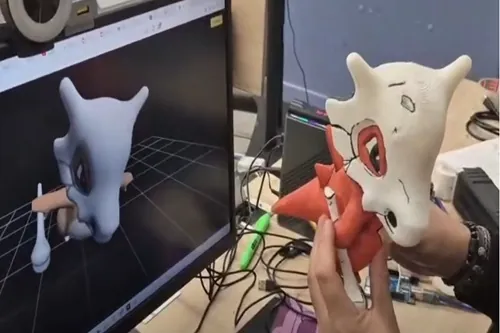

Descripción del proyecto
Integración de ESP32 y visualización web para monitoreo y representación digital de procesos en tiempo real.
Integración de ESP32 y visualización web para monitoreo y representación digital de procesos en tiempo real.

Integración de ESP32 y visualización web para monitoreo y representación digital de procesos en tiempo real.
Permite monitorear y representar digitalmente procesos en tiempo real mediante ESP32 y tecnologías web.
Contacto
Estoy disponible para colaborar en proyectos, docencia, investigación y desarrollo tecnológico.
Santiago, Chile